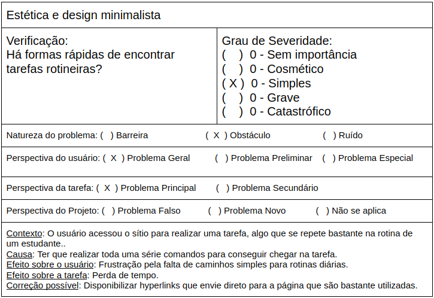

Escolha do Site
Sites analisados
Na tentativa de escolha de um site para ser avaliado durante a disciplida de Interação Humano-Computador, cada integrante ficou engarregado de pesquisar um site com um número razoável de problemas para que seja proposto melhorias através do que foi aprendido com o decorrer da disciplina.
| Site | Sobre | |
|---|---|---|
| gov.br | O esse site é um projeto de unificação dos canais digitais do governo federal. Mas ele é, acima de tudo, um projeto sobre como a relação do cidadão com o Estado deve ser: simples e focada nas necessidades do usuário de serviços públicos. | |
| Anatel | A Agência Nacional de Telecomunicações é a primeira agência reguladora a ser instalada no Brasil, criada pela Lei 9.472, de 16 de julho de 1997. | |
| Saberes/Senado | O Saberes é um Ambiente Virtual de Aprendizagem – AVA, baseado no Moodle, que visa facilitar a aprendizagem. É nesse ambiente que o participante dos cursos a distância do ILB terá acesso aos conteúdos, realizará as atividades, enviará e receberá mensagens e terá acesso às suas notas e certificado | |
| DETRAN-DF | Os Departamentos Estaduais de Trânsito são os órgãos do Poder Executivo Estadual que fiscalizam o trânsito de veículos terrestres em suas respectivas jurisdições, no território Brasileiro. | |
 |
SAE | O Sistema de Apoio Educacional(SAE) é um projeto originário de pesquisas envolvendo professores e estudantes de três instituições brasileiras de ensino superior (UCB, UFRGS e PUC-RS), que objetiva empregar recursos tecnológicos adequados a uma metodologia educacional coerente ao ensino-aprendizagem de alta qualidade, consistindo em um projeto multidisciplinar(Educação, Psicologia e Informática). |
Site Escolhido
SAE
Avaliando o site através das heúristicas propóstas por Nielsen, foi possível encontrar alguns aspectos que poderiam ser melhorados no site. A seguir é mostrado a heurística de estética e design minimalista que foi realizado sobre o site.
Imagem 1: Heurística de estética e design 
Além dos problemas encontrados na heurística supracitada, também há problemas na visibilidade de qual estado estamos no sistema, liberdade de controle fácil para o usuário, prevenções de erros, reconhecimento em vez de memorização, flexibilidade e eficiência de uso. Essa quantidade de problemas encontrados tornou viável a escolha do site para propostas de melhorias nessas áreas.
Devido a limitações de tempo do semestre, foram escolhidas as seguintes heurísticas para serem melhoradas no nosso projeto: estética e design, visibilidade de qual estado estamos no sistema, reconhecimento em vez de memorização e eficiência de uso.
Referência
SIMONE DINIZ JUNQUEIRO BARBOSA, BRUNO SANTANA DA SILVA, Interação Humano-Computador, 1a. Edição, Editora Campus, 2010.
Versionamento
| Data | Versão | Descrição | Autor |
|---|---|---|---|
| 27/11/2020 | 1.0 | Criação do documento | Realizado em conjunto por todos os integrantes |